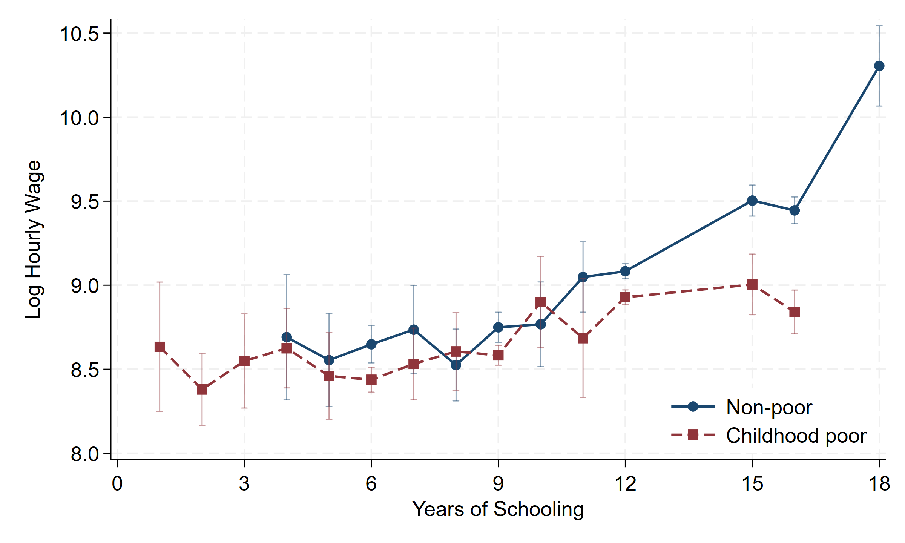
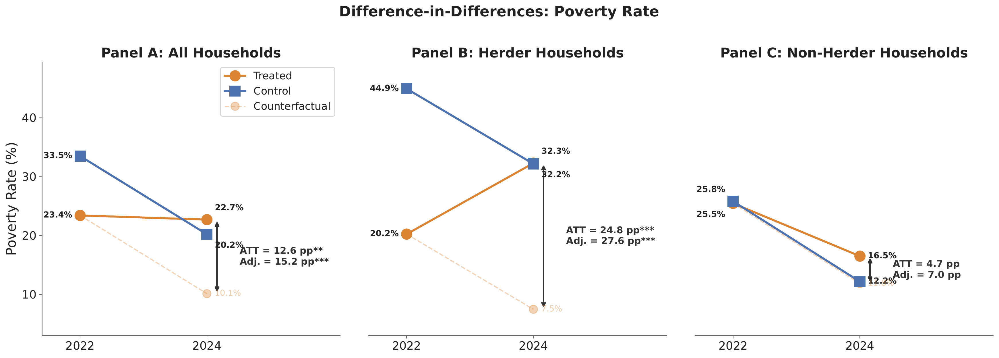

Profile
Two children grow up in the same Indonesian village and finish the same number of years of school. Decades later, a year of that schooling pays one of them more than four times what it pays the other. The difference: one of them grew up poor.
I study how poverty persists. Sometimes it is inherited, as in Indonesia, where growing up poor quietly lowers what every later year of schooling delivers. Sometimes it arrives in a single season, as in Mongolia, where one extreme winter pushed herding families into poverty that the national statistics never saw. I am a PhD candidate in economics at the University of Groningen (expected 2027), and these two questions anchor my dissertation.
Before and alongside the PhD, I spent more than five years as a consultant economist with the World Bank, working on poverty assessments, crisis monitoring, and large-scale household surveys, from instrument design and fieldwork through to published microdata. The policy work taught me which questions matter; the PhD is teaching me how to answer them credibly.
Primary fields: Development economics; Poverty & inequality; Labour & education economics; Climate shocks & household welfare.
Secondary fields: Behavioral & experimental economics; Applied microeconometrics.
Job Market Paper
The Long Shadow: Childhood Poverty and the Returns to Education
Abstract
This study documents substantial heterogeneity in returns to education by childhood poverty status among Indonesian wage workers aged 15–35. Individuals who grew up poor earn only 1.5 percent per additional year of schooling, less than one-fourth of the 6.8 percent earned by those who were never poor. We estimate these returns using a control-function approach that exploits conditional heteroskedasticity for identification in the absence of exclusion restrictions. The control-function coefficient is three times larger among the poor, indicating markedly stronger positive selection into schooling in this group: only individuals with exceptionally favorable unobserved characteristics attain higher levels of education. We also present descriptive evidence of lower skill accumulation per year of schooling and more limited access to high-paying jobs among disadvantaged individuals, patterns consistent with lower marginal returns. These findings highlight the limited equalizing role of education, measured here by years of schooling.

Research
Working Papers
The Cold Shock: Poverty Impacts of Extreme Winter in Mongolia
Abstract
In the winter of 2023/24, Mongolia lost one in every eight of its animals, more than eight million head, to a dzud: an extreme winter of deep cold, heavy snow, and ice-locked pasture. Yet the disaster left no mark on the aggregate statistics: national poverty fell steeply over the same two years. Cold extremes are largely absent from the disaster-poverty evidence; we provide the first quasi-experimental estimate of their poverty cost, exploiting spatial variation in winter severity in the first nationally representative household panel to bracket a major dzud. In the absence of the dzud, poverty in the most affected districts would have fallen roughly 15 percentage points further. The cost fell overwhelmingly on herders, through asset destruction rather than distress sales: animals died before they could be sold, taking the household’s own-produced food with them, and livestock income accounts for most of the income loss. Non-herders were spared the asset shock but not the food shock: their food insecurity rose by roughly four-fifths as lost own-production met rising food prices. In both groups the burden fell on poorer households: vulnerable herders were pushed below the poverty line, while poor non-herders fell deeper beneath it. As climate extremes intensify, cold shocks in pastoral economies can reverse poverty gains by destroying productive assets and weakening food security, even when aggregate poverty is falling.

Work in Progress
- In-Utero Exposure to Mongolia’s Dzud and Long-Term Labor Market Outcomes — a causal mediation analysis through educational attainment (design stage).
Selected Presentations
- The Long Shadow — Asian Economic Development Conference (AEDC), ADB & ADBI, HKUST, Hong Kong, Jun 2026.
- The Cold Shock (with L. Kim) — FEB PhD Conference, University of Groningen, Apr 2026.
- The Long Shadow — Dutch Economists Day (NED), Leiden University (The Hague), Oct 2025.
- The Long Shadow — Frontiers of Causal Inference & Machine Learning (CIML), IMT Lucca, Jul 2025.
Data & Survey Work
A core part of my work is running large household surveys end-to-end with World Bank teams: designing instruments, managing fieldwork across phone, face-to-face, and hybrid modes, and cleaning, documenting, and publicly disseminating the resulting microdata. Together we have carried this through multiple survey rounds covering thousands of households.
Software
Teaching
- Empirical Methods of Economics — University of Groningen, Fall 2026 (incoming). Delivering the empirical/computer-lab sessions of the course (course led by Prof. dr. Viola Angelini).
- Lecturer, Applied Econometrics — Prasetiya Mulya Business School (international undergraduate program), 2019–2022. Panel models, difference-in-differences, discrete-choice models, robust inference.
- Lecturer, Statistics for Business Decision — Gadjah Mada University (pre-MBA, international class), 2019–2020.
Curriculum Vitae
Contact
If you work on poverty, mobility, education, or climate and development, I would be glad to hear what you are working on, and to find where the work overlaps.
Faculty of Economics and Business, University of Groningen, The Netherlands
a.febriady@rug.nl · febriadyade@gmail.com
LinkedIn · ORCID · GitHub
References
- Viola Angelini — University of Groningen (PhD supervisor) — v.angelini@rug.nl
- Agnieszka Postepska — University of Groningen (PhD supervisor) — a.postepska@rug.nl
- Lydia Kim — The World Bank (coauthor) — ykim14@worldbank.org
- Ririn Purnamasari — The World Bank (supervisor at the World Bank) — rpurnamasari@worldbank.org
- Abigail Barr — University of Nottingham (MSc thesis supervisor) — Abigail.Barr@nottingham.ac.uk
- Sudarno Sumarto — SMERU Research Institute (supervisor at TNP2K) — ssumarto@smeru.or.id
- Elan Satriawan — Universitas Gadjah Mada (supervisor at TNP2K; BSc thesis advisor) — esatriawan@ugm.ac.id